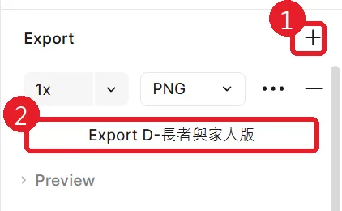
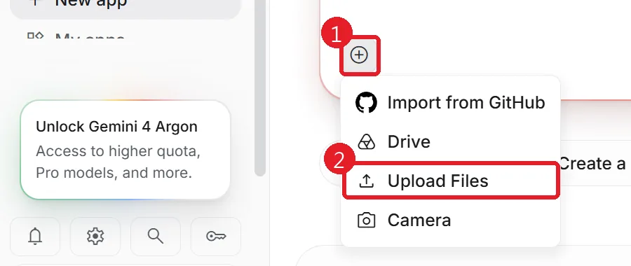
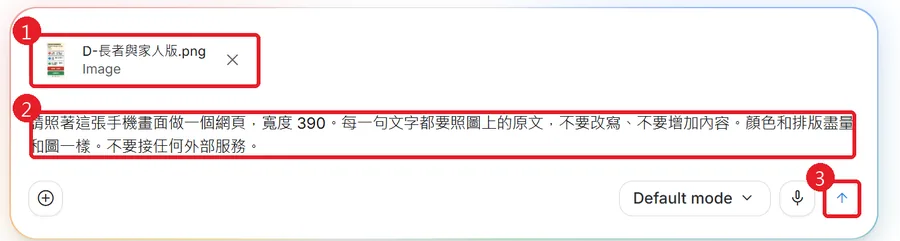
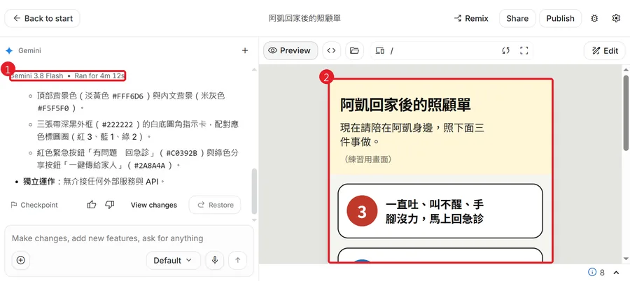
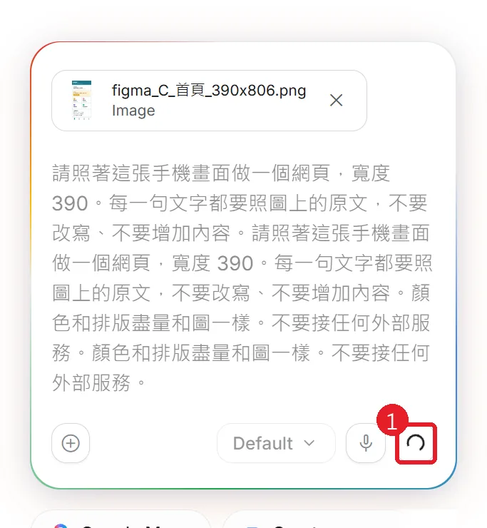

所有週次Semua minggu · 遊戲設計學 · W11 · AI Studio 1/3Desain Game · W11 · AI Studio 1/3
用 AI Studio，把你的 Figma 畫面做成網頁Gunakan AI Studio untuk mengubah tampilan Figma Anda menjadi halaman web
最後更新：Pembaruan terakhir: 2026-11-17 20:54
上週你用 Figma 改了走讀遊戲的一個畫面。這一份只做一件事：把那張畫面圖交給 Google AI Studio，做成一模一樣的網頁。新手 30～40 分鐘就做得完。Minggu lalu Anda telah mengubah salah satu tampilan game tur jalan kaki dengan Figma. Tugas ini hanya melakukan satu hal: serahkan gambar tampilan tersebut ke Google AI Studio untuk dibuat menjadi halaman web yang persis sama. Pemula bisa menyelesaikannya dalam 30–40 menit.
盡量在課堂上做完；期限有兩週，回家可以補。做到哪一階都可以交。Usahakan selesai di kelas; batas waktu dua minggu, bisa dilanjutkan di rumah. Sampai tahap mana pun boleh dikumpulkan.
▶ 先試玩走讀樣板Coba mainkan template tur edukasi terlebih dahulu 🎨 走讀 Figma 稿Menelusuri draf Figma 🎨 走讀修改樣板（4 種方向）Menelusuri modifikasi template (4 arah)
問卷Kuesioner課程自我檢核問卷（約 4 分鐘）Kuesioner evaluasi diri pembelajaran (sekitar 4 menit)
完成後，把「已完成課程自我檢核問卷」那張卡截圖，交到 flipclass 的 W11-1（佔 3%）。Setelah selesai, ambil tangkapan layar kartu 「已完成課程自我檢核問卷」(Sudah Menyelesaikan Kuesioner Evaluasi Diri Pembelajaran), lalu kumpulkan ke W11-1 di flipclass (bobot 3%).
概覽概覽 (Ringkasan)W11 AI Studio 1/3W11 AI Studio 1/3
| 先做完Selesaikan terlebih dahulu | 最上面的「課程自我檢核問卷」，完成後截圖交到 flipclass 的 W11-1（佔 3%）「課程自我檢核問卷」(Kuesioner Evaluasi Diri Pembelajaran) yang paling atas, setelah selesai ambil tangkapan layar dan kumpulkan ke W11-1 di flipclass (bobot 3%) |
| 要交什麼Apa yang harus dikumpulkan | AI Studio 作品連結（設成別人打得開），加上一張預覽截圖，再加一張助教討論完成後的「結果卡」截圖（卡上已含出處標示欄的檢核，只交這一張）Tautan karya AI Studio (diatur agar bisa dibuka orang lain), ditambah satu tangkapan layar pratinjau, dan satu lagi tangkapan layar "kartu hasil" setelah selesai berdiskusi dengan asisten pengajar (kartu tersebut sudah mencakup pemeriksaan kolom atribusi sumber, hanya kumpulkan yang satu ini) |
| 大約多久Berapa lama kira-kira | 30～40 分鐘。生成大約要二到四分鐘，偶爾會超過四分鐘，等的時候不要重送30–40 menit. Proses pembuatan memakan waktu sekitar 2 hingga 4 menit, terkadang lebih dari 4 menit. Jangan kirim ulang saat menunggu |
| 開放與截止Waktu Buka dan Batas Akhir | 11/18（三）19:05 開放，12/02（三）19:05 截止。期限一到就不能再交Dibuka 18/11 (Rabu) 19:05, ditutup 02/12 (Rabu) 19:05. Tidak dapat mengumpulkan lagi setelah batas waktu berakhir |
| 做完接哪一份Lanjut ke tugas mana setelah selesai | 老師會在課堂上說明下一份。Dosen akan menjelaskan tugas berikutnya di kelas. |
| 先講清楚Penjelasan awal | AI Studio 免費版放進去的內容，可能被拿去改進產品。不要放真實姓名、學號，或其他同學的個人資料。Konten yang dimasukkan ke AI Studio versi gratis mungkin digunakan untuk menyempurnakan produk. Jangan memasukkan nama asli, nomor mahasiswa, atau data pribadi teman sekelas lainnya. |
步驟Langkah-langkah六步做完這一份Selesaikan bagian ini dalam enam langkah
每一步是一張卡片，點標題可以收合或展開。圖中的紅框是要看或要按的地方。AI Studio 在手機上送出後可能卡住，建議用電腦；手機只能先上傳圖片與貼指令。Setiap langkah adalah satu kartu, klik judul untuk menutup atau membukanya. Kotak merah pada gambar adalah area yang perlu dilihat atau diklik. AI Studio mungkin tersangkut setelah kirim lewat ponsel, disarankan menggunakan komputer; ponsel hanya bisa untuk mengunggah gambar dan menempel instruksi terlebih dahulu.
1準備一張畫面圖（PNG）Siapkan satu gambar tampilan (PNG)約 5 分鐘Sekitar 5 menit
用你在 W10 改好的那張 Figma 畫面：在左邊 Layers 點畫面的名字，右邊面板最底下按 Export 旁的「＋」（圖中 1），再按「Export ＜畫面名稱＞」（圖中 2）。不要自己截螢幕。Gunakan tampilan Figma yang telah Anda ubah di W10: klik nama tampilan di Layers sebelah kiri, klik tanda 「＋」 di samping Export di bagian paling bawah panel kanan (gambar 1), lalu klik「Export ＜Nama Tampilan＞」(gambar 2). Jangan mengambil tangkapan layar sendiri.
做完的樣子：Tampilan setelah selesai:電腦裡有一張 PNG。Ada satu file PNG di dalam komputer.

手機版的 Figma 網頁沒有 Export，這一步要用電腦（教室電腦或同組同學的電腦）。Halaman web Figma versi ponsel tidak memiliki Export, langkah ini harus menggunakan komputer (komputer kelas atau komputer teman sekelompok).
W10 沒做的同學，用這四張備用圖挑一張（點開後另存圖片），就可以接著做：Bagi mahasiswa yang belum mengerjakan W10, pilih salah satu dari empat gambar cadangan ini (klik untuk buka lalu simpan gambar), lalu lanjutkan pengerjaan: 隊伍・任務・地圖・排行
2打開 AI Studio，上傳圖片Buka AI Studio, unggah gambar約 5 分鐘Sekitar 5 menit
到 aistudio.google.com/apps，輸入框左下角的圓圈加號（圖中 1），選「Upload Files（上傳檔案）」（圖中 2）。第一次上傳可能跳出一個視窗，要按「Acknowledge（我了解）」才能繼續。輸入框旁邊的「Default mode」、麥克風和「I'm feeling lucky」這次都不要按。Buka aistudio.google.com/apps, klik tanda tambah di dalam lingkaran di kiri bawah kotak input (gambar 1), pilih「Upload Files（上傳檔案 (Unggah Berkas)）」(gambar 2). Saat pertama kali mengunggah mungkin muncul jendela sembulan, harus klik「Acknowledge (Saya Mengerti)」untuk melanjutkan. Jangan klik「Default mode」, mikrofon, dan「I'm feeling lucky」di samping kotak input kali ini.
做完的樣子：Tampilan setelah selesai:輸入框上方出現你的圖的縮圖。Gambar mini dari gambar Anda akan muncul di atas kotak input.

手機網頁也是點輸入框左下的加號，選「Upload Files」，用檔案選擇器選你的 PNG。Di web ponsel juga klik tanda tambah di kiri bawah kotak input, pilih 「Upload Files」, lalu gunakan pemilih file untuk memilih PNG Anda.
3貼第一段指令，送出Tempel instruksi bagian pertama, kirim約 3 分鐘Sekitar 3 menit
貼下面這段，按輸入框右下的向上箭頭送出（圖中 3）。Tempel teks di bawah ini, tekan panah atas di kanan bawah kotak input untuk kirim (3 pada gambar).
做完的樣子：Tampilan setelah selesai:畫面開始轉，表示在生成了。Layar mulai berputar, artinya sedang dalam proses pembuatan.
請照著這張手機畫面做一個網頁，寬度 390。每一句文字都要照圖上的原文，不要改寫、不要增加內容。顏色和排版盡量和圖一樣。不要照圖上的換行位置硬斷行，讓文字自己排版。不要接任何外部服務。

手機網頁送出會卡住（測試時轉了 4 分鐘都沒有進入專案），這一步請改用電腦或同組同學的電腦；生成好以後，可以用手機打開分享連結看。Kirim lewat web ponsel akan tersangkut (saat diuji terus berputar selama 4 menit tanpa masuk ke proyek), pada langkah ini silakan beralih menggunakan komputer atau komputer teman sekelompok; setelah selesai dibuat, Anda bisa membuka tautan berbagi di ponsel untuk melihatnya.
4等它生成，看預覽Tunggu selesai dibuat, lihat pratinjau約 3 分鐘（生成要再等）Sekitar 3 menit (perlu tunggu lagi saat proses pembuatan)
生成大約要二到四分鐘，偶爾會超過四分鐘；畫面在轉就是還在做，不要重送。生成完預覽有時是空白，再等 15 秒。Proses pembuatan memakan waktu sekitar dua hingga empat menit, terkadang bisa lebih dari empat menit; jika layar masih berputar artinya masih diproses, jangan kirim ulang. Setelah selesai dibuat, pratinjau terkadang kosong, tunggu lagi 15 detik.
做完的樣子：Tampilan setelah selesai:右邊預覽看起來和你的圖一樣。Pratinjau di sebelah kanan terlihat sama dengan gambar Anda.

5對照檢查兩點Periksa dan cocokkan dua poin約 5 分鐘Sekitar 5 menit
①每一句話都在，沒有掉字、沒有被改寫；②把預覽和圖並排，標題和卡片文字的大小看起來差不多。有地方不對，貼下面這句請它只修版面。① Setiap kalimat lengkap, tidak ada kata yang hilang, tidak ditulis ulang; ② Sejajarkan pratinjau dan gambar, ukuran teks judul dan kartu terlihat hampir sama. Jika ada yang salah, tempel kalimat di bawah ini untuk memintanya hanya memperbaiki tata letak.
做完的樣子：Tampilan setelah selesai:兩點都過。Kedua poin terpenuhi.
版面跑掉了。請只調整間距和字級，讓它和我給的圖一樣；文字、顏色、功能都不要動。
想更準的話，到 Figma 右側 Design 面板看 Typography 的字級數字，貼在這句後面。Jika ingin lebih akurat, buka panel Design di sisi kanan Figma untuk melihat angka ukuran font Typography, lalu tempel di belakang kalimat ini.
6設成別人打得開，複製連結Atur agar bisa dibuka orang lain, salin tautan約 4 分鐘Sekitar 4 menit
按右上角 Share（分享）。「General access」預設是「Restricted（只有你指定的人可以存取）」，改成「Public: Anyone with the link can view（知道連結的人可以檢視）」（圖中 1），再按「Copy link（複製連結）」（圖中 2）。想確認別人打得開：用無痕視窗貼上連結，會先要你登入 Google，登入後看得到作品就算成功（不登入看不到是正常的）。Klik Share (Bagikan) di pojok kanan atas.「General access」secara default adalah「Restricted (Hanya orang yang Anda tentukan yang dapat mengakses)」, ubah menjadi「Public: Anyone with the link can view (Siapa saja yang memiliki tautan dapat melihat)」(gambar 1), lalu klik「Copy link (Salin tautan)」(gambar 2). Untuk memastikan orang lain bisa membukanya: tempel tautan di jendela penyamaran, Anda akan diminta masuk ke Google terlebih dahulu, jika bisa melihat karya setelah masuk berarti berhasil (normal jika tidak bisa melihat tanpa masuk).
做完的樣子：Tampilan setelah selesai:你有一條打得開的 AI Studio 連結。Anda memiliki tautan AI Studio yang dapat dibuka.

助教討論Diskusi dengan asisten pengajar和助教聊聊你的決定（約 10 分鐘）Bicarakan keputusanmu dengan asisten pengajar (sekitar 10 menit)
和助教的討論，佔這次成績的 30%。Diskusi dengan asisten pengajar mencakup 30% dari nilai kali ini.AI 助教在畫面右下角的「問AI助教」，還沒綁定編號也能先打開看；每一步旁邊也有一顆「問AI助教」。它不會給你答案，只會問你問題：你做了什麼決定、為什麼、放棄了什麼。Asisten pengajar AI ada di 「問AI助教」(Tanya asisten pengajar AI) di pojok kanan bawah layar, dan Anda tetap bisa membukanya terlebih dahulu meskipun belum menautkan nomor ID; di samping setiap langkah juga ada tombol 「問AI助教」(Tanya asisten pengajar AI). Ia tidak akan memberi Anda jawaban, hanya akan mengajukan pertanyaan kepada Anda: keputusan apa yang Anda buat, mengapa, dan apa yang Anda lepaskan.
評分看的是你想得多深，不是你講了幾次、寫了幾個字。想得越深，分數越高：Penilaian melihat seberapa dalam kamu berpikir, bukan berapa kali kamu berbicara atau berapa banyak kata yang kamu tulis. Semakin dalam kamu berpikir, semakin tinggi nilainya:
- 只說做了什麼Hanya menyebutkan apa yang dilakukan：你講了你做了什麼。: Kamu menceritakan apa yang telah kamu lakukan.
- 說得出為什麼Bisa menjelaskan alasannya：你講了理由。: Kamu menjelaskan alasannya.
- 比較過別的做法Membandingkan dengan cara lain：你說出你還想過什麼，還有放棄的那個代價是什麼。: Kamu menyebutkan apa lagi yang sempat kamu pikirkan, serta apa konsekuensi dari hal yang kamu lepaskan.
- 不同意時有證據Ada bukti saat tidak setuju：AI 或樣板說的和你想的不一樣時，你拿出你驗證過的證據，或說服了它。: Ketika AI atau template mengatakan hal yang berbeda dari pemikiranmu, kamu menunjukkan bukti yang telah kamu verifikasi, atau berhasil meyakinkannya.
至少回答 3 輪才會被評；講很多次但一直重複，不會多算。登不進去或系統壞了，不會扣你的分，找老師補。你和助教的對話會存下來，老師會讀。討論完按「對，就這樣」，會出現一張結果卡，把它截圖交到 flipclass；卡上是一組代碼，不是你的編號。討論的分數到第 16 週才公布，平時只會看到「已完成本週討論」。Setidaknya harus menjawab 3 putaran agar dinilai; berbicara berkali-kali tetapi terus mengulang tidak akan dihitung lebih. Jika tidak bisa masuk atau sistem rusak, nilai Anda tidak akan dikurangi, hubungi dosen untuk mengurusnya. Percakapan Anda dengan asisten pengajar akan disimpan dan akan dibaca oleh dosen. Setelah selesai berdiskusi, klik 「對，就這樣」(Ya, begitu saja), kartu hasil akan muncul, ambil tangkapan layarnya lalu kumpulkan ke flipclass; yang ada di kartu adalah serangkaian kode, bukan nomor mahasiswa Anda. Nilai diskusi baru akan diumumkan pada minggu ke-16, biasanya Anda hanya akan melihat 「已完成本週討論」(Telah Menyelesaikan Diskusi Minggu Ini).
出處標示欄出處標示欄 (Kolom Atribusi Sumber)存版本時填三格Isi tiga kolom saat menyimpan versi
每週至少寫一次。很短就好，目的是讓你自己看清楚哪些是你決定的。在這一頁下方的填寫區（或樣板頁的「📒 我的紀錄」）填。Tulis setidaknya sekali seminggu. Cukup singkat saja, tujuannya agar Anda memahami dengan jelas bagian mana yang Anda putuskan sendiri. Isi di area pengisian di bagian bawah halaman ini (atau「📒 我的紀錄 (Catatan Saya)」di halaman template).
- 這一版裡，哪些部分交給了 AI？Dalam versi ini, bagian mana saja yang diserahkan ke AI?從填寫區挑（可以多個）；沒有用 AI 就勾「沒有用 AI」。Pilih dari area pengisian (bisa lebih dari satu); jika tidak menggunakan AI, centang「沒有用 AI (Tidak menggunakan AI)」.
- 這一版裡，哪一兩處是你自己決定的？Dalam versi ini, satu atau dua bagian mana yang Anda putuskan sendiri?一句話就好；想不到就寫「沒有」。Cukup satu kalimat; jika tidak terpikirkan, tulis「沒有 (Tidak ada)」.
- 本週那一句。Satu kalimat untuk minggu ini.填寫區會顯示題目，照題目用一句話回答。Area pengisian akan menampilkan pertanyaan, jawablah dalam satu kalimat sesuai pertanyaan.
「為什麼這樣決定」那一格可以不填。你寫的內容只留在自己的瀏覽器。Kolom「為什麼這樣決定 (Mengapa memutuskan demikian)」boleh tidak diisi. Konten yang Anda tulis hanya tersimpan di peramban Anda sendiri.
先綁定你的編號，這裡才會出現填寫區。Tautkan nomor identitas Anda terlebih dahulu, area pengisian baru akan muncul di sini.
檢核檢核 (Pemeriksaan)交之前，自己對照四點Sebelum mengumpulkan, periksa sendiri empat poin ini
- 1還原。Restorasi.預覽和圖看起來一樣：每一句話都在、沒被改寫。Pratinjau dan gambar terlihat sama: setiap kalimat ada dan tidak ditulis ulang.
- 2別人打得開。Orang lain bisa membukanya.General access 是 Public，用無痕視窗貼上連結、登入 Google 後打得開。General access adalah Public, tempel tautan di jendela penyamaran, dan bisa dibuka setelah masuk ke Google.
- 3沒有真人資料。Tidak ada data orang sungguhan.畫面上只有練習用的資料，沒有真人姓名、電話、病歷號。Hanya ada data untuk latihan di layar, tidak ada nama orang sungguhan, nomor telepon, atau nomor rekam medis.
- 4填了出處標示欄、附了檢核截圖。Telah mengisi kolom atribusi sumber, dan melampirkan tangkapan layar pemeriksaan.填寫區寫了三格，把助教討論的「結果卡」截圖（卡上已含這份檢核），連同作品連結和預覽截圖一起交到 flipclass。Tiga kotak pada area pengisian telah diisi, kumpulkan tangkapan layar "kartu hasil" dari diskusi dengan asisten pengajar (kartu tersebut sudah mencakup pemeriksaan ini), bersama dengan tautan karya dan tangkapan layar pratinjau ke flipclass.
怎麼交：到 flipclass 這份作業，貼上 AI Studio 連結，並上傳預覽截圖和檢核截圖。連結打不開，視同未繳交。期限一到就不能再交，來不及請先跟老師說。Cara mengumpulkan: Buka tugas ini di flipclass, tempel tautan AI Studio, lalu unggah tangkapan layar pratinjau dan tangkapan layar pemeriksaan. Jika tautan tidak bisa dibuka, dianggap belum mengumpulkan. Tidak dapat mengumpulkan lagi setelah batas waktu berakhir, jika tidak sempat harap beri tahu dosen terlebih dahulu.
卡住了卡住了 (Mengalami Kendala)常見的卡住與解法Kendala Umum dan Solusinya
- 等很久還沒好Menunggu lama tapi belum selesai
- 大約二到四分鐘，偶爾會超過四分鐘；畫面在轉就是還在做，不要重送；剛送出的前幾秒網址還停在首頁，不代表失敗。Sekitar 2 hingga 4 menit, terkadang lebih dari 4 menit; jika layar masih berputar berarti masih diproses, jangan kirim ulang; beberapa detik pertama setelah kirim URL masih berada di beranda, bukan berarti gagal.
- 預覽是空白Pratinjau kosong
- 先再等 15 秒；有時生成完就有畫面，有時要等一下。Tunggu lagi 15 detik terlebih dahulu; terkadang tampilan langsung muncul setelah selesai dibuat, terkadang perlu menunggu sebentar.
- 畫面上的字被改掉或掉字Teks di layar berubah atau ada kata yang hilang
- 貼「版面跑掉時」那句；還是不對，在指令裡把缺的字一句一句列出來，要求逐字照用。Tempel kalimat「版面跑掉時 (Saat tata letak berantakan)」; jika masih salah, buat daftar kata-kata yang hilang kalimat demi kalimat di instruksi, minta untuk menggunakan kata demi kata persis sama.
- 看到 API、金鑰字樣Melihat kata-kata API, kunci API
- 先不用理，這次做的網頁不接任何服務，也不需要金鑰。Abaikan dulu untuk saat ini, halaman web yang dibuat kali ini tidak terhubung ke layanan apa pun dan tidak memerlukan kunci API.
- 說額度用完Pemberitahuan bahwa kuota habis
- 先等一下，或先去做別的；一次只送一段，不要連按。Tunggu sebentar, atau kerjakan yang lain dulu; kirim hanya satu bagian sekaligus, jangan klik berulang kali.
手機Ponsel手機注意事項Hal yang Perlu Diperhatikan pada Ponsel
- Figma 手機版沒有 Export；匯出 PNG 請用電腦或同組同學的電腦。Figma versi ponsel tidak memiliki Export; untuk mengekspor PNG silakan gunakan komputer atau komputer teman sekelompok.
- AI Studio 手機網頁送出後可能一直轉圈；上傳和貼指令可以先做，送出請用電腦。Web ponsel AI Studio mungkin terus berputar setelah kirim; mengunggah dan menempel instruksi bisa dilakukan terlebih dahulu, tetapi untuk kirim gunakan komputer.
- 以上是用手機尺寸的網頁模擬測過的，真手機可能不同。Poin di atas telah diuji menggunakan simulasi web ukuran ponsel, ponsel sebenarnya mungkin berbeda.
